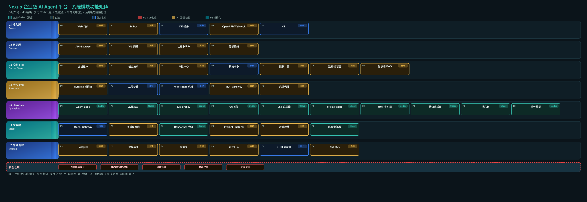

0. 概述
本文档按八层架构逐模块列出功能清单矩阵。每模块含：模块名、所属层、功能描述、输入、输出、依赖模块、复用 Codex（crate 名）、是否自建、优先级（P0/P1/P2）、阶段（M1–M12）。
0.1 统计概览
功能矩阵图

1. L1 接入层 · Access Layer
| # | 模块名 | 层 | 功能描述 | 输入 | 输出 | 依赖 | 复用 Codex | 自建 | 优先级 | 阶段 |
|---|
1.x L1 接入层 · 功能详述
1.1 Web 门户 — React+WS 前端
React 单页应用 + WebSocket 实时连接。核心视图：
- 会话列表：按
thread实体展示，支持搜索/筛选/归档 - 任务时间线：渲染
item事件流，实时增量更新 - 审批抽屉：侧滑面板展示
ApprovalTicket详情（参数脱敏、Diff 预览、风险等级） - 产物预览：对象存储产物在线预览（代码、文档、图片）
- Diff 查看：文件变更差异对比，支持行级审查
1.2 IM Bot — 飞书/钉钉/企微/Slack
审批推送最佳渠道。用交互式卡片消息承载"批准/拒绝/修改后批准"三按钮，回调签名验证防伪造。按风险等级选渠道：高危→全渠道推送+邮件；中危→IM+Web；低危→仅 Web 抽屉。
1.3 IDE 插件 — VS Code / JetBrains
直接复用 Codex 的 app-server-protocol（JSON-RPC）与 IDE 扩展思路，把远端 Thread 映射到本地编辑器。代码 Diff 内联展示、工具审批可在 IDE 内完成。统一约束：所有入口不直连 Harness，必经 L2 网关。
1.4 OpenAPI + Webhook
RESTful API（POST /v1/threads、POST /v1/threads/{id}/turns）。Webhook 在任务完成/审批请求/配额告警时回调业务系统，支持 HMAC 签名验证与幂等投递。
1.5 CLI — 复用 codex CLI + 自定义登录
复用 cli crate 的本地交互能力，叠加企业登录（OIDC token 刷新）、远端 Thread 操作（start/resume/interrupt/approve）。开发者调试与 CI 集成入口。
2. L2 网关层 · Gateway Layer
2.1 API Gateway — REST 路由/校验/幂等/限流
- 幂等：
Idempotency-KeyHeader 避免重复提交产生双份计费 - 限流三层：租户级（套餐配额）→ 用户级（并发上限）→ IP 级（防爆破）
- 请求校验：JSON Schema 校验请求体，拒绝畸形输入
2.2 WebSocket 网关 — 事件推送/权限驱动订阅
订阅权限模型：用户订阅 Thread 事件前校验 membership(user, workspace)；权限变更→立即断连；事件先落 Postgres 后推 WS（可回放），WS 仅展示不作为真相。
2.3 认证中间件 — OIDC/SAML/SCIM/mTLS
- OIDC：Authorization Code + PKCE 对接 Keycloak / Okta / Azure AD
- SAML：遗留企业 IdP 兼容
- SCIM 2.0：自动同步组织架构（用户/部门/组）
- mTLS：服务账号用客户端证书认证，证书指纹绑定
service_account
2.4 配额预扣 — 粗粒度拦截
请求准入时预扣 token 配额（按历史均值 × 安全系数）；预扣失败→429 告知排队位置；细粒度结算在 L3 配额计费（实际用量 vs 预扣量，多退少补）。
3. L3 控制平面 · Control Plane（自建核心）
3.1 身份租户 — Tenant/OrgUnit/User/Role/Membership, RBAC+ABAC
权限继承：Agent 可用权限 = 用户权限 ∩ 工作区权限 ∩ Agent 角色上限 ∩ 策略中心允许（四者取交集，任何一项为空即拒绝）
三个身份区分：用户身份（人）、Agent 身份（服务账号，权限 = 用户权限子集 ∩ 显式授予）、连接器身份（MCP/OAuth 委托令牌）
3.2 任务编排 — Temporal Workflow, 两层循环
不自建 while-loop，用 Temporal 持久化 Workflow。外层（平台）Workflow 管资源与账本（Pod 生命周期、配额、审计），长周期；内层（Harness）run_turn 管模型与工具，短周期。调度策略：租户权重队列 + 优先级 + 并发上限；Prod 与实验任务分池。
3.3 审批中心 — ApprovalTicket, HITL, 6 边界, IM 推送
六种边界处理：Pod 崩溃 → 审批在 DB + item_seq 去重 + 已决策重放；超时→默认拒绝；权限撤销→失效则 ticket 作废；改参数→重新走策略求值；批量→作用域限定（限目录/工具/有效期 ≤ 1h）；审计→全部不可篡改留存。
3.4 策略中心 — 策略对象, allow/deny/require_approval/dual, 漂移防护
策略对象：{tenant, org_path, role, workspace, tool, action, risk_level, data_classification}
决策结果：allow / deny / require_approval / require_dual_approval（四眼原则）/ allow_with_audit_only
求值时机：任务准入一次 + 每次高危工具调用前一次（准入结果非永久通行证）
漂移防护：策略快照写入任务上下文；运行中策略变更"不溯及已批准动作、对新动作用新策略"
下发产物：按 (tenant, role, workspace, risk_level) 生成 config.toml + execpolicy.rules + enabled_tools 白名单 + AGENTS.md，运行时注入 Pod，任务结束即焚
3.5 配额计费 — 四维计量, 归因, 预算软硬阈值, 优雅暂停
四维：token（prompt/cached/reasoning/output）、工具调用次数、沙箱运行时长、存储与出站流量
归因链：tenant → org_unit → user → thread → turn → model
预算控制：软阈值告警 → 降档到经济模型 → 硬阈值熔断（优雅暂停：保存 rollout 后回收 Pod，预算恢复可 resume）
3.6 连接器治理 — 分级, 质量分, MCP Gateway, 凭据代理
分类分级：官方认证 / 企业私有 / 社区（默认禁用）。质量分：可用性 × P95 延迟 × 错误率 × 权限最小化程度 → 低于阈值自动降级/下线。安全约束：enabled_tools 白名单优先于 disabled_tools；破坏性注解工具恒定需审批。
3.7 知识库/RAG — ACL 随索引, 混合召回, rerank, 引用溯源
ACL 随索引写入：每个 chunk 携带 tenant_id + acl_tags + permission_version。检索流程：metadata/ACL 过滤 → 稠密 + 稀疏混合召回 → rerank → 只回填支撑结论的片段（附 chunk_id 与权限版本）。与 Harness 衔接：知识检索做成 MCP 工具或自定义 Tool；检索权限在 Gateway 侧强制。
4. L4 执行平面 · Execution Plane
4.1 Runtime 池调度 — 一 Turn 一 Pod, 预热池, 冷启动 < 5s
| 项 | 设计 |
|---|---|
| 任务粒度 | 一个 Turn = 一个 Pod（长任务可复用，有最大时长，超期强制结算并 resume 到新 Pod） |
| 镜像 | 预装 Codex 二进制 + 语言工具链；按语言/场景分多个镜像 |
| 冷启动优化 | 预热池 + Workspace 快照（PVC snapshot）；目标 < 5s |
| 并发 | 租户级 + 全局 + 队列等待位；超限排队并实时告知位置 |
| 销毁 | 任务结束或空闲超时（15–30 min）后销毁；销毁前必做：上传 rollout、结算、审计 |
4.2 三层沙箱 — 容器层 + Codex 命令级 + 网络层
| 层 | 技术 | 防什么 | 复用 |
|---|---|---|---|
| ① 容器/微虚拟机 | K8s Pod + Seccomp/AppArmor；高敏用 Kata/Firecracker | 租户间横向逃逸、内核攻击面 | 自建 |
| ② 命令级 OS 沙箱 | Seatbelt / Landlock+seccomp+bwrap / Windows restricted token | Agent 在工作区内乱跑命令、读 SSH key、外传数据 | Codex 自带 |
| ③ 网络层 | NetworkPolicy 默认拒绝全部出站 | 数据外泄、C2 回连、依赖投毒外联 | 自建 |
Linux 下 Codex 沙箱在容器中可能因宿主不支持 Landlock/seccomp 而失效。容器层不能省，需启动自检验证沙箱可用性（自检失败 = 禁止调度生产任务）。
4.3 Workspace 供给 — git worktree / PVC 快照 / AGENTS.md 注入
代码场景：从 Git 仓库 shallow clone 或挂载 PVC 快照；worktree crate 做并行任务隔离。非代码场景：挂载租户对象存储前缀下工作目录（只读 + 可写 scratch 分区）。AGENTS.md 注入：企业规范、项目约定、安全红线随 Workspace 下发。
4.4 MCP Gateway — 凭据注入 / 白名单 / 出站审计 / 脱敏
Codex 的 config.toml 里不出现任何真实密钥，只出现指向 Gateway 的本地地址与任务令牌。
4.5 凭据代理 — 短期 JWT, 绑定 tenant+thread+turn, 即时吊销
JWT audience 限定为 Model Gateway / MCP Gateway。TTL = 任务超时 + 缓冲（≤ 2h）。绑定 tenant_id + thread_id + turn_id + 权限快照哈希，任一不符即拒绝。即时吊销：用户点"停止任务" → 控制面吊销 → Gateway 拒绝后续调用。
沙箱启动自检清单（自检不过禁止调度）：
- Landlock / seccomp / Seatbelt 可用性验证通过
- 出站网络仅能到达两个白名单地址
- 镜像内无长期密钥文件（镜像扫描）
- 只读根文件系统 + 非 root 用户
- 资源限额（CPU / 内存 / 磁盘 / PID）已生效
5. L5 Harness · Agent 内核（复用 Codex，黑盒不改）
5.1 Agent Loop — run_turn 七阶段 (core crate)
| 阶段 | 名称 | 职责 |
|---|---|---|
| 1 | admission | 准入检查：approval_policy + sandbox.mode + execpolicy 预检 |
| 2 | snapshot | 上下文快照：当前 Thread 状态 + 工具可见性 |
| 3 | sampling | 模型采样：经 Model Gateway 调用 LLM |
| 4 | tool dispatch | 工具调度：ToolRouter 路由到具体工具 |
| 5 | writeback | 结果写回：工具结果回灌上下文，生成 Item 事件 |
| 6 | compaction | 压缩判定：上下文将满时触发 auto compact |
| 7 | complete/interrupt | Turn 完成或中断 |
5.2 工具路由 — ToolRouter (tools crate)
统一工具定义（JSON Schema 输入输出规范）。MCP 工具适配：自动发现 MCP server 暴露的工具。动态工具解析：按上下文动态启用/禁用工具。四层调用形态：direct call / MCP call / shell exec / custom tool。
5.3 ExecPolicy — Starlark 规则引擎 (execpolicy crate)
parser 解析命令行令牌；evaluator 按规则集求值（allow/deny/require_approval）；rule types 支持通配符、路径限制、参数约束；与会话层解耦：规则集由 L3 策略中心按租户/角色生成下发。
5.4 OS 沙箱 — sandboxing / linux-sandbox / bwrap / windows-sandbox-rs
| 平台 | crate | 技术 |
|---|---|---|
| macOS | sandboxing | Seatbelt（sandbox-exec + .sbpl profile） |
| Linux | linux-sandbox + bwrap | Landlock + seccomp + bubblewrap |
| Windows | windows-sandbox-rs | Restricted token + AppContainer |
注意：Linux 容器内可能因宿主不支持 Landlock/seccomp 而失效，容器层（L4）不能省。
5.5 上下文压缩 — compact / compact_remote_v2 (core crate)
run_auto_compact：上下文接近 token 上限时自动触发。保留推理轨迹（retained reasoning）：压缩不丢失关键推理链。compact_remote_v2：支持远程压缩（大上下文 offload）。
5.6 Skills / Hooks — skills / hooks crate
skills crate：Markdown 程序化技能，可复用、可分享、可版本管理。hooks crate：生命周期钩子（Turn 开始/结束、工具调用前后、审批请求时）。企业 Skill 市场基础。
5.7 MCP 客户端 — codex-mcp / rmcp-client
连接外部 MCP 服务器（stdio / http）；把 Codex 自身暴露成 MCP 工具给其他 Agent 调；经 L4 MCP Gateway 代理（凭据注入 + 审计脱敏）。
5.8 协议集成面 — app-server / app-server-protocol
JSON-RPC 2.0 over stdio / unix socket / WebSocket。Thread → Turn → Item 三原语。generate-ts / generate-json-schema 生成 TS 类型与 JSON Schema（纳入 CI，协议变更可自动检出）。主集成面：L3 任务编排经此协议驱动 Harness。
5.9 持久化 — state / thread-store / rollout / history
Thread 跨进程重启可恢复、可 fork、可回滚。改造点：事件外送到云端（L3 任务编排消费 → Postgres）；本地状态视为"可丢弃缓存"。rollout 文件同步到对象存储（L7），Pod 销毁后可下载恢复。
5.10 协作编排 — collaboration-mode-templates / agent-roles / agent-identity / agent-graph-store
主从式 / 流水线式 / 专家路由式三种协作模式。子 Agent 派生（独立 Thread + 受限权限）。协作模板复用。Agent 身份管理与角色定义。
6. L6 模型层 · Model Layer
6.1 Model Gateway — 路由 / 计量 / 降级
统一入口（可用 LiteLLM / 自建）。沙箱出站只到 Model Gateway，令牌按任务绑定、TTL ≤ 任务超时。计量：区分 prompt/cached/reasoning/output token。降级：主模型不可用时自动切备模型。
6.2 多模型路由 — 经济 / 中档 / 强模型分档
简单子任务（分类/抽取/简单问答）→ 经济模型；复杂子任务（规划/工具编排）→ 强模型；长任务中段 → 中档模型。参考阿里百炼 AUTO 路由思路，但必须在自有评测集上校准。
6.3 Responses 代理 — responses-api-proxy (Codex)
Codex 侧可指向自有端点（model_provider 指向 Model Gateway 地址）。OpenAI 兼容 API 代理，支持 streaming。
6.4 Prompt Caching — 前缀缓存
相同前缀启用 prompt caching；系统提示与工具描述做版本化，提升命中率。
6.5 故障转移 — 主→备→待重试
主模型超时/限流 → 降级备模型 → 仍失败则任务进入"待重试"而非直接失败。
6.6 私有化部署 — ollama / lmstudio (Codex)
数据不出域租户指向自建 vLLM/Ollama 端点。Codex 内置 ollama provider（本地 Ollama）和 lmstudio provider（本地 LM Studio）。高合规租户指向自建 vLLM 集群。
7. L7 存储与治理 · Storage & Governance
7.1 Postgres 主库 — RLS / 分区 / 强一致
| 数据类型 | 存储方式 | 理由 |
|---|---|---|
| 结构化元数据 | Postgres 主表 | 强一致、事务 |
| 会话事件（Item 流） | Postgres 分区表 + 冷归档 | 实时查询与回放；按月分区 |
item 表 | 按 tenant_id + 时间分区 | 最大最热的表 |
| audit_log / usage_record | 只追加（WORM） | 合规要求不可篡改 |
RLS 兜底：即使应用层漏加 tenant_id 条件，数据库层强制行级安全策略拒绝跨租户查询。
7.2 对象存储 — 按租户前缀 + CMK
rollout 文件：每 N 个 Item 或每 T 秒上传一次，结束时必传。产物：上传后经敏感信息/恶意文件扫描才对用户可见。按租户前缀 + 按租户 CMK 加密：禁用租户 CMK → 数据不可解密。
7.3 向量库 — pgvector
知识库 embedding 存储；pgvector（与 Postgres 同库）或独立 Milvus。
7.4 审计日志 — WORM + SIEM 投递
WORM（追加写存储）+ SIEM 投递；应用层账号无 DELETE/UPDATE 权限（独立角色写入，审计账号只读）。
7.5 OTel 可观测 — 全链路 trace
trace 串起"用户请求 → 任务 → 工具 → 模型"。复用 Codex otel-trace-websocket crate 做 trace 事件 WS 推送。diagnostics crate 提供诊断信息收集。指标 → Grafana；日志 → ClickHouse / ES。
7.6 评测中心 — 三类数据集 + 五评测平面 + CI 门禁
三类数据集：黄金集（主路径）、对抗集（越权/注入/工具失败/数据缺失）、生产采样集（脱敏）
五个评测平面：任务完成率、工具调用正确率、安全拦截率、成本/任务、体验（步骤效率、澄清次数）
CI 门禁：模型/提示/工具/策略任一变更必须跑回归
8. 安全与合规 · 贯穿层
8.1 四重隔离取证 — 逻辑 + 运行时 + 密钥 + 存储
| 取证层 | 方法 | 验证 |
|---|---|---|
| 逻辑 | 所有查询强制带 tenant_id + Postgres RLS 兜底 | SQL 注入不跨租户 |
| 运行时 | namespace + 节点亲和性 + NetworkPolicy | Pod 间不可达 |
| 密钥 | 按租户 CMK，租户禁用后数据不可解密 | 密钥撤销验证 |
| 存储 | 对象存储按租户前缀 + 独立桶策略 | 禁止跨前缀列举 |
8.2 KMS 按租户 CMK — HashiCorp Vault / 云 KMS
按租户客户主密钥（CMK）；租户禁用 → 数据不可解密。与 L7 对象存储、L4 凭据代理联动。
8.3 网络策略 — NetworkPolicy 默认全禁出站
NetworkPolicy 默认拒绝全部出站；沙箱仅放行 Model Gateway + MCP Gateway；高敏租户独立节点池。
8.4 内容安全 — PII / 提示注入防护 / 产物扫描
PII 检测、提示注入防护（数据面与控制面分离：不可信内容不得改变系统策略）、产物敏感扫描、出站脱敏。
8.5 红队演练 — 季度跨租户越权
每季度一次：跨租户越权（从 A 租户沙箱尝试访问 B 资源）、提示注入（恶意指令）、供应链攻击（恶意 MCP 工具/依赖投毒）。结果作为准入条件（非可选项），发现项 100% 闭环。
9. 模块优先级与阶段分布
9.1 按优先级
9.2 按阶段
| 阶段 | 目标 | 交付模块 |
|---|---|---|
| M0（PoC 4 周） | 三大假设验证 | Agent Loop、OS 沙箱、协议集成面、三层沙箱、网络策略 |
| M1 | 身份 + 骨架 | 身份租户（单租户）、API Gateway、WS 网关、认证中间件、Web 门户骨架、CLI |
| M2 | 执行闭环 + 会话落库 | Runtime 池调度、Workspace 供给、任务编排、OpenAPI、Model Gateway、对象存储、配额预扣 |
| M3 | 审批 + 策略 | 审批中心、策略中心、IM Bot |
| M4 | 产物 + 计量 | 配额计费（单租户）、OTel 基础、IDE 插件、Skills/Hooks |
| M5 | 多租户 + 隔离 | 身份租户（多租户）、四重隔离取证、KMS、Postgres RLS |
| M6 | 配额 + 计费 | 配额计费（多租户）、成本归因看板 |
| M7 | 连接器 + 凭据 | MCP Gateway、连接器治理、凭据代理 |
| M8 | 评测体系 | 评测中心 |
| M9 | 可观测 + 稳定 | 多模型路由、Prompt Caching、故障转移、OTel 全链路 |
| M10 | 合规 + 安全 | 审计日志 WORM、内容安全、红队演练 |
| M11 | 性能 + 知识库 | Runtime 池优化、知识库/RAG、向量库、协作编排 |
| M12 | 生态 + 私有化 | 私有化部署、连接器生态 |
10. 模块依赖关系
关键依赖链
- 用户请求 → L1 → L2 API Gateway → L2 认证中间件 → L3 身份租户 → L2 配额预扣 → L3 任务编排
- L3 任务编排 → L4 Runtime 池调度 → L4 Workspace 供给 → L4 三层沙箱 → L5 app-server → L5 Agent Loop
- L5 Agent Loop → L6 Model Gateway → L6 模型路由 → 模型响应
- L5 Agent Loop → L5 工具路由 → L5 ExecPolicy → L4 MCP Gateway → 外部 API
- L5 app-server 事件流 → L3 任务编排消费 → L7 Postgres（落库）→ L2 WS 网关 → L1 Web/IM（推送）
- L3 审批中心 ← L5 app-server 审批请求 → L1 IM Bot/Web → 用户决策 → L3 审批中心回写 → L5 app-server 继续
附录 A · Codex Crate 完整清单（105 crate）
| 功能域 | crate | L5 模块 |
|---|---|---|
| Agent 主循环 | core | 5.1 Agent Loop、5.5 上下文压缩 |
| 工具路由 | tools、apply-patch、file-search、file-system、exec、shell-command、shell-escalation | 5.2 工具路由 |
| 执行策略 | execpolicy | 5.3 ExecPolicy |
| OS 沙箱 | sandboxing、linux-sandbox、bwrap、windows-sandbox-rs、windows-sandbox-service、mxc-sandbox、process-hardening、guardian-context | 5.4 OS 沙箱 |
| Skills/Hooks | skills、hooks、plugin、core-plugins | 5.6 Skills/Hooks |
| MCP | codex-mcp、rmcp-client、connectors | 5.7 MCP 客户端 |
| 集成接口 | app-server、app-server-protocol、app-server-transport、app-server-client、app-server-test-client、app-server-daemon、app-server-protocol-noop-macros、exec-server、exec-server-protocol、codex-client、codex-api、core-api、protocol、stdio-to-uds | 5.8 协议集成面 |
| 持久化 | state、thread-store、rollout、rollout-trace、history、message-history | 5.9 持久化 |
| 协作编排 | collaboration-mode-templates、agent-roles、agent-identity、agent-graph-store | 5.10 协作编排 |
| 模型抽象 | model-provider-info、model-provider、responses-api-proxy、ollama、lmstudio、chatgpt、models-manager | L6 模型层 |
| 配置 | config、config-schema、codex-home、install-context、features、toggles | 配置基础设施 |
| 网络/安全 | network-proxy、workload-identity、aws-auth、secrets、http-client | 安全基础设施 |
| 工具链 | git-utils、worktree、terminal-detection、arg0、ansi-escape、file-watcher、context-fragments、feedback、attachment-store | 工具基础设施 |
| 可观测 | otel-trace-websocket、diagnostics、analytics、build-info、response-debug-context | L7 OTel |
| CLI/TUI | cli、tui | L1 CLI |
| 其他 | async-utils、websocket-client、cloud-tasks、cloud-tasks-mock-client、cloud-config、external-agent-migration、code-mode、code-mode-runtime、code-mode-host、code-mode-protocol、voice-host、realtime-webrtc、v8-poc、login、prompts、uds、backend-client、codex-backend-openapi-models、codex-experimental-api-macros、test-binary-support、thread-manager-sample | 辅助/实验 |